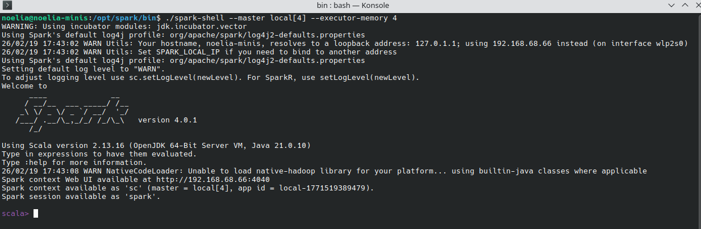
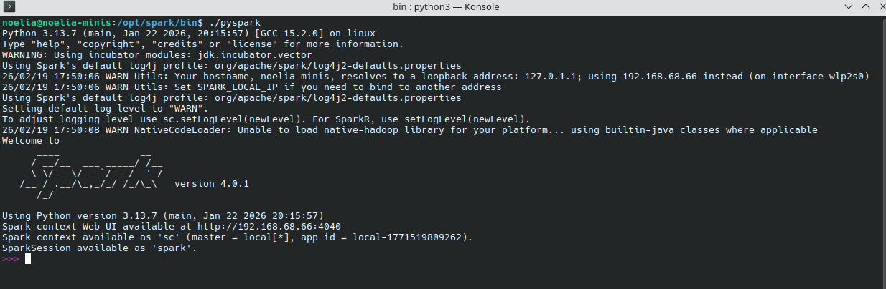

Ejecución y uso de las shells de Spark (Scala/Python)
DESCRIPCIÓN
Las shells de Spark son entornos interactivos que permiten ejecutar código sobre Apache Spark sin necesidad de compilar proyectos completos. Son ideales para experimentar, probar consultas, explorar datos y aprender Spark.
Spark ofrece dos shells principales:
- Scala Shell →
spark-shell - Python Shell →
pyspark
Ambas proporcionan un entorno REPL (Read–Eval–Print Loop) con una instancia de SparkSession ya inicializada.
En esta lección vamos a profundizar en cada una de ellas, con ejemplos. Al final de la lección hay disponible una comparativa con sus casos de uso.
SCALA SHELL
Ejecución
Se inicia en la terminal ejecutando ./spark-shell
spark-shell --master local[4] --executor-memory 4G
Figura 1: Interfaz de Scala Shell de Spark mostrando inicio de sesión y comandos disponibles
Características principales
- Es la shell nativa de Spark, ya que Spark está escrito en Scala.
- Ofrece acceso inmediato a:
spark: instancia deSparkSessionsc: instancia deSparkContext
- Permite trabajar con:
- RDDs
- DataFrames
- Datasets (solo disponibles en Scala y Java)
Ejemplo básico
val df = spark.read.json("datos.json")
df.show()Ventajas
- Mejor rendimiento y compatibilidad con todas las APIs.
- Acceso a Datasets tipados.
- Ideal para usuarios que trabajan con el ecosistema JVM.
PYTHON SHELL
Ejecución
Se inicia con:
pysparkTambién admite configuraciones:
pyspark --master local[*] --packages com.databricks:spark-xml_2.12:0.15.0
Figura 2: Interfaz de PySpark Shell mostrando contexto Spark disponible y comandos Python
Características principales
- Permite usar Spark desde Python.
- Proporciona automáticamente:
spark:SparkSessionsc:SparkContext
- Soporta:
- RDDs
- DataFrames
- Funciones SQL
- No soporta Datasets tipados (solo Scala/Java).
Ejemplo básico
df = spark.read.json("datos.json")
df.show()Ventajas
- Sintaxis más sencilla y familiar para científicos de datos.
- Integración con librerías como Pandas, NumPy o Matplotlib.
- Ideal para análisis exploratorio y prototipado.
COMPARATIVA
Comparación rápida
| Aspecto | Scala Shell (spark-shell) |
Python Shell (pyspark) |
|---|---|---|
| Lenguaje | Scala | Python |
| API soportada | RDD, DataFrame, Dataset | RDD, DataFrame |
| Rendimiento | Más alto | Ligeramente menor |
| Facilidad de uso | Más técnico | Más accesible |
| Integración | JVM | Ecosistema científico de Python |
| Uso típico | Ingeniería de datos | Ciencia de datos / análisis |
Casos de uso comunes en ambas shells
- Cargar y explorar datos rápidamente.
- Probar transformaciones sobre RDDs o DataFrames.
- Ejecutar consultas SQL.
- Depurar lógica antes de integrarla en un proyecto.
- Aprender Spark de forma interactiva.
¿Cuál usar?
Depende del perfil de la persona que lo use:
- Si vienes del mundo de la ingeniería de datos o Java/Scala, la shell de Scala es más natural.
- Si vienes de Python o ciencia de datos, PySpark es la opción más cómoda.
Durante este curso, siempre que sea posible se utilizara por comodidad pyspark sobre scala, aunque se realizaran ejemplos de los dos.